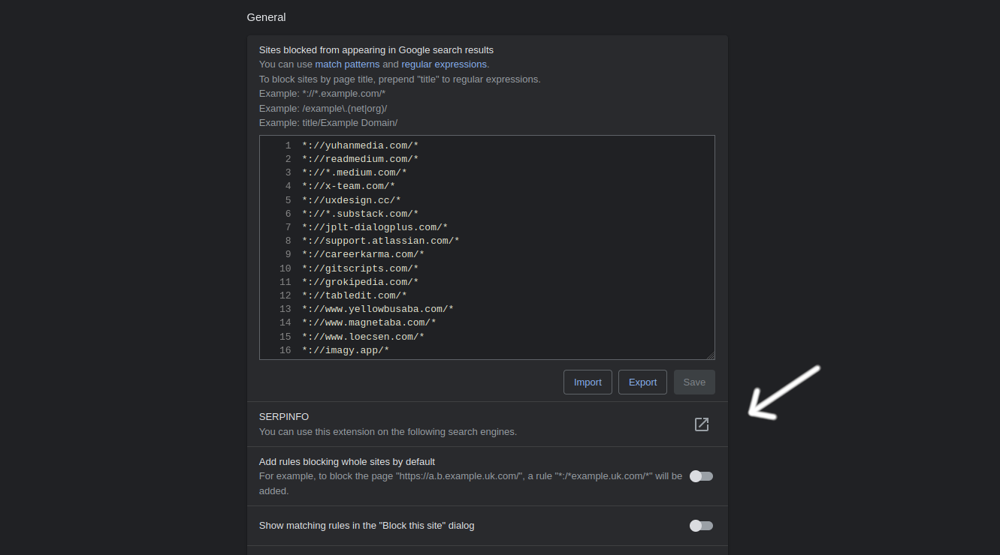

Addendum 2026-05-19
The method I outline in this article is outdated as searxng-docker is now deprecated. Please follow this guide now: https://docs.searxng.org/admin/installation-docker.html#compose-instancing.
Installing Docker
To get this to work, you must have docker installed. If you don’t, take care of that first before you complete any of the next steps.
On Arch Linux, it is as simple as running sudo pacman -Syu docker.
Installing SearXNG-Docker
All of these next steps are also available on the readme at searxng-docker’s github repo.
To get searxng-docker on our machine, clone the git repo to /usr/local and navigate there.
cd /usr/local
git clone https://github.com/searxng/searxng-docker.git
cd searxng-docker
Generate the secret key with the following command, so you have a secret key in your settings.yml. You just have to run it, no need to edit the actual settings.yml file.
sed -i "s|ultrasecretkey|$(openssl rand -hex 32)|g" searxng/settings.yml
Now just run docker compose up -d and you should be able to see your SearXNG instance at http://localhost:8080.
Configuring the SearXNG Instance For Use With HTTPS
Setting http://localhost:8080 to be the default search engine in Firefox doesn’t work. Firefox seems to correctly identify SearXNG’s OpenSearch plugin, but searches cannot be completed with the address bar or through other interfaces except directly through the search bar while you are already on the page http://localhost:8080. It seems that Firefox doesn’t allow such pages to be implemented as a search engine. To fix this, we must serve SearXNG over HTTPS.
Install and Setting Up mkcert
mkcert is a tool for making locally-trusted development certificates. I can install it via pacman with sudo pacman -Syu mkcert.
For install instructions on other platforms, you should see the readme at mkcert’s github repo.
Then run mkcert -install to set up a local certificate authority.
Generating Certs to Use with SearXNG
If you aren’t already in /usr/local/searxng-docker, cd there and then run
mkcert localhost
mkcert should then give you two files called localhost.pem and localhost-key.pem. Put these two files in /usr/local/searxng-docker/certs (you will have to create this directory). DO NOT share these keys. Keep them private.
You do not actually have to name the certificate “localhost.” If you want to use a fake domain name like “mysearch.test” you can do this by editing /etc/hosts and adding the line
127.0.0.1 mysearch.test
Configuring Caddyfile
Now open your Caddyfile. Add these four lines of code below the first block:
https://localhost {
tls /certs/localhost.pem /certs/localhost-key.pem
reverse_proxy searxng:8080
}
Make sure the tls line points to the location of the .pem files you just generated.
Then replace
# SearXNG
reverse_proxy localhost:8080
with
# SearXNG
reverse_proxy searxng:8080
Configuring docker-compose.yaml
Now open your docker-compose.yaml. Replace the entire caddy: block with this
caddy:
container_name: caddy
image: docker.io/library/caddy:2-alpine
depends_on:
- searxng
restart: unless-stopped
networks:
- searxng # <-- Attach to searxng
ports:
- "127.0.0.1:443:443" # <-- Map localhost port 443 to container port 443
volumes:
- ./Caddyfile:/etc/caddy/Caddyfile:ro
- ./certs:/certs:ro # <-- Your mkcert certs go here
- caddy-data:/data:rw
- caddy-config:/config:rw
environment:
- SEARXNG_HOSTNAME=${SEARXNG_HOSTNAME:-localhost}
- SEARXNG_TLS=${LETSENCRYPT_EMAIL:-internal}
logging:
driver: "json-file"
options:
max-size: "1m"
max-file: "1"
Effectively, we are mapping the localhost port 443 to the container port 443. You can change the host port (e.g., “8443:443”) to avoid conflicts. We also add a line to volumes so that caddy can see the certs we generated with mkcerts.
Now navigate down to the searxng: block. Replace the entire thing with this:
searxng:
container_name: searxng
image: docker.io/searxng/searxng:latest
restart: unless-stopped
networks:
- searxng
expose:
- "8080" # <-- Internal only
volumes:
- ./searxng:/etc/searxng:rw
- searxng-data:/var/cache/searxng:rw
environment:
- SEARXNG_BASE_URL=https://${SEARXNG_HOSTNAME:-localhost}/ # <-- The base URL is modified
logging:
driver: "json-file"
options:
max-size: "1m"
max-file: "1"
This makes port 8080 available only to other containers on the Docker network and not the host. No one else on the network has access to SearXNG.
Now run:
docker compose restart caddy
docker compose restart searxng
We can now access SearXNG via Caddy at https://localhost and use this local instance as our search engine in Firefox!
EXTRA: Making This Work With uBlacklist
uBlacklist is a Firefox addon that lets you add “blacklists,” or lists of sites that you don’t want showing up in your search results. It’s also available for Chrome, but using Chrome defeats the purpose of configuring SearXNG in the first place. Don’t use Chrome with this.
The default implementation of uBlacklist supports SearXNG, but only through a list of publically available instances in its SERPINFO list. That means uBlacklist cannot see your private instance of SearXNG.
To fix this, go to the extension’s Options page. Under “General”, click “SERPINFO”.

Then under “My SERPINFO”, add the following code:
name: SearXNG
homepage: https://github.com/ublacklist/builtin#readme
pages:
- name: All
includeRegex: "/search(\\?|$)"
results:
- root: .category-general
url: a
props:
title: h3
$category: [const, "web"]
- root: .category-images
url: .result-url > a
props:
title: .title
$category: [const, "images"]
- root: .category-videos
url: a
props:
title: h3
$category: [const, "videos"]
- root: .category-news
url: a
props:
title: h3
$category: [const, "news"]
commonProps:
$site: searx # backwards compatibility
matches:
- https://localhost/*
You should be able to use SearXNG with uBlacklist now. If you’re not using “localhost” as your domain name, you need to change the last line to match it.